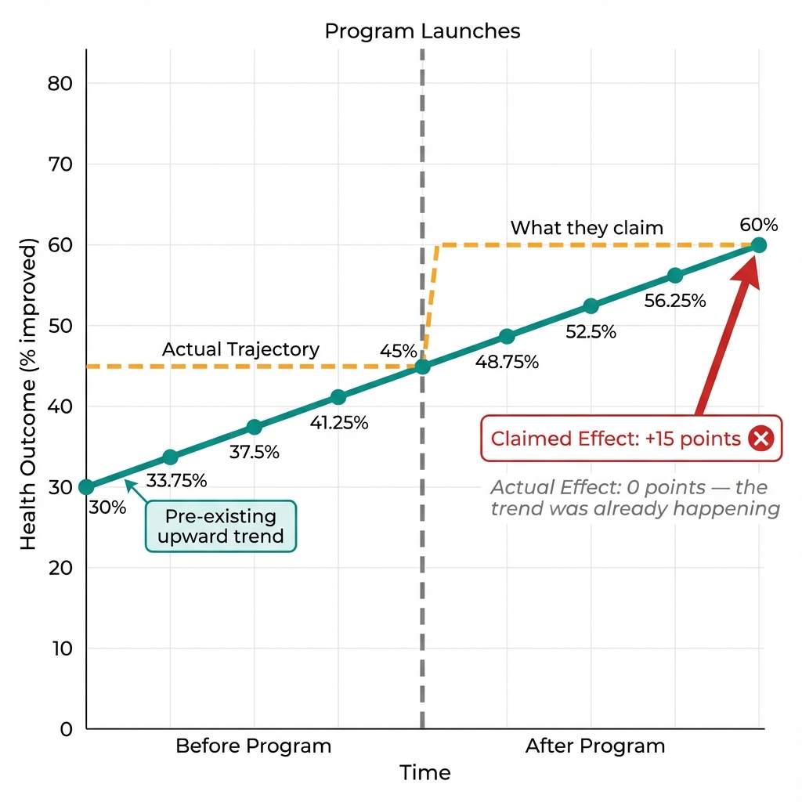
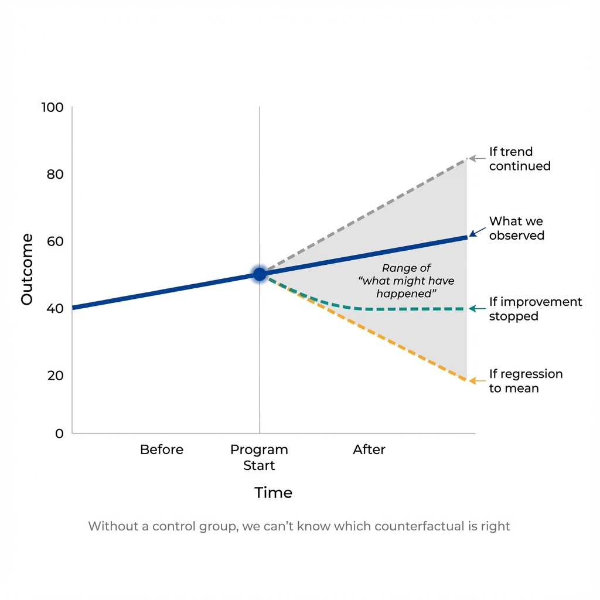

The Claim
A county launches a new screening program. Four years later, screening rates have increased dramatically. Success! (Data are simulated for illustration.)
The Press Release
"Since launching our Community Screening Initiative in 2020, cancer screening rates have increased from 45% to 60%, a remarkable 15 percentage point improvement. This proves our program is saving lives."
The Evidence
Next: What was happening to screening rates before the program launched?
The Trap
The full picture, including the years before the program, reveals what the before-after comparison concealed.
Toggle the View

The "program effect" disappears when we see the pre-existing trend.
What Went Wrong?
Screening rates were already increasing at 3.75 percentage points per year before the program launched. The post-program improvement simply continued this pre-existing trend.
The county compared screening rates just before the program (45%) to rates four years later (60%). The pre-existing trend alone would have produced the same result: 60%.

Without a control group, we can't know which counterfactual is correct.
The Problem of Unknown Counterfactuals
The before-after comparison assumes that without the program, the screening rate would have stayed flat at 45%. But there are many possible counterfactual futures:
If Trend Continued
Program effect: 0%
If Improvement Stopped
Program effect: +15%
If Rates Declined
Program effect: +20%
Which scenario is correct? We can't know from before-after data alone. That's the trap.
Next: What's the key lesson for evaluating programs and policies?
The Key Insight
Understanding the before-after trap protects you from common evaluation mistakes.
The Fundamental Problem
Before-after comparisons assume the counterfactual is "no change."
Attributing change to a program requires knowing the counterfactual. Outcomes trend up, trend down, and fluctuate for reasons independent of any intervention, making "no change" a naive assumption.
Common Causes of Pre-Existing Trends
- Secular trends: Gradual improvements in technology, awareness, or social norms
- Policy spillovers: Other programs or regulations affecting the same outcome
- Economic cycles: Recessions and recoveries that affect health behaviors
- Demographic shifts: Aging populations, migration patterns
- Regression to the mean: Extreme values naturally moving toward average
Any of these could explain the observed improvement—without any program effect at all.
The Economist's Question
The before-after comparison gives you a number; its meaning depends entirely on the counterfactual—what would have happened without the intervention.
The traditional question: "Did screening rates improve after the program launched?"
The economist's question: "Compared to what alternative future?"
Better Approaches
- Control groups: Compare to similar areas that didn't get the program
- Difference-in-differences: Compare the change in treated vs. untreated groups
- Interrupted time series: Test whether the slope changed at the intervention point
- Randomized trials: The gold standard—random assignment creates a valid counterfactual
Key Takeaway
Without knowing the counterfactual trajectory, we can't attribute post-program changes to the program.
Before-after comparisons seduce with simplicity, and simplicity misleads when it obscures the counterfactual. Always ask: "What was the trend before, and what would have happened if we'd done nothing?"